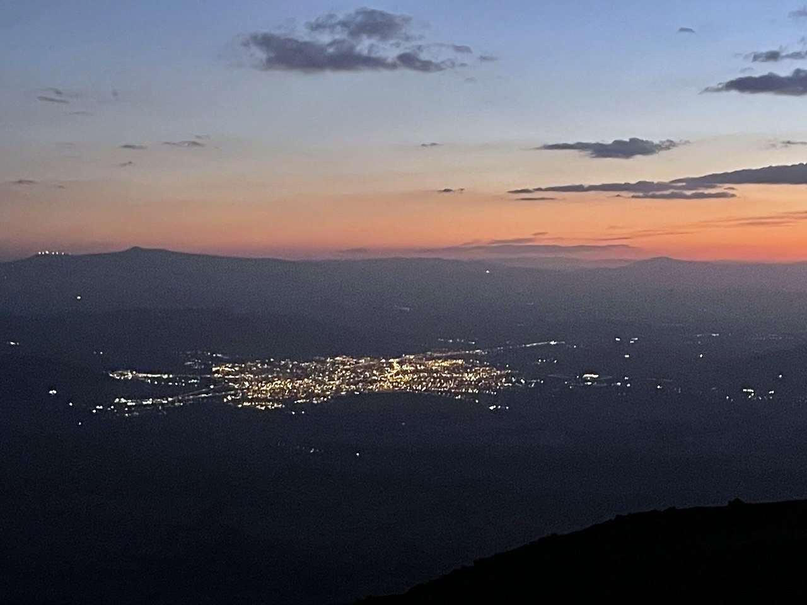
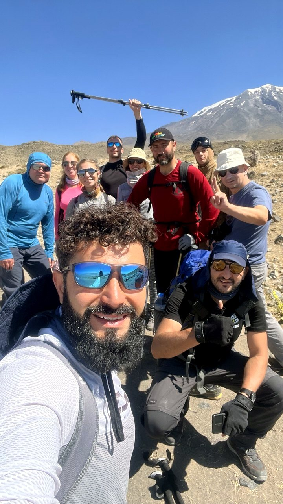
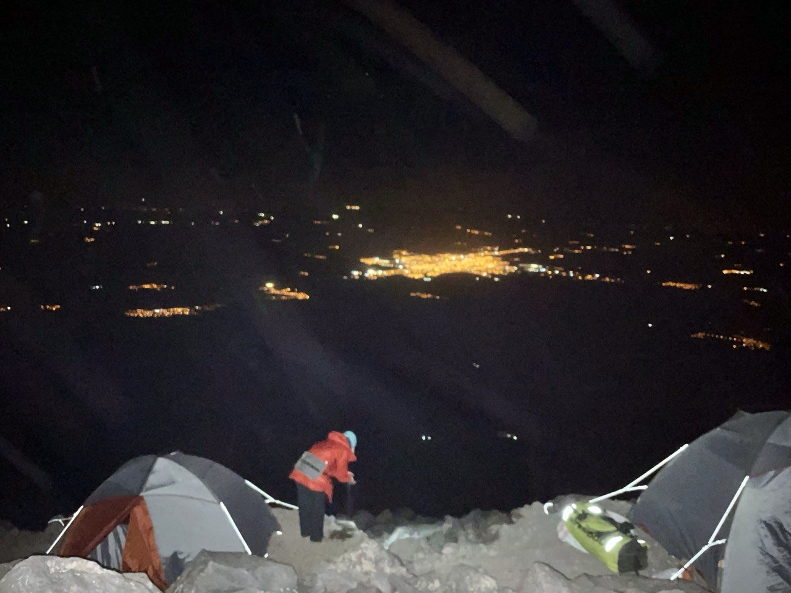
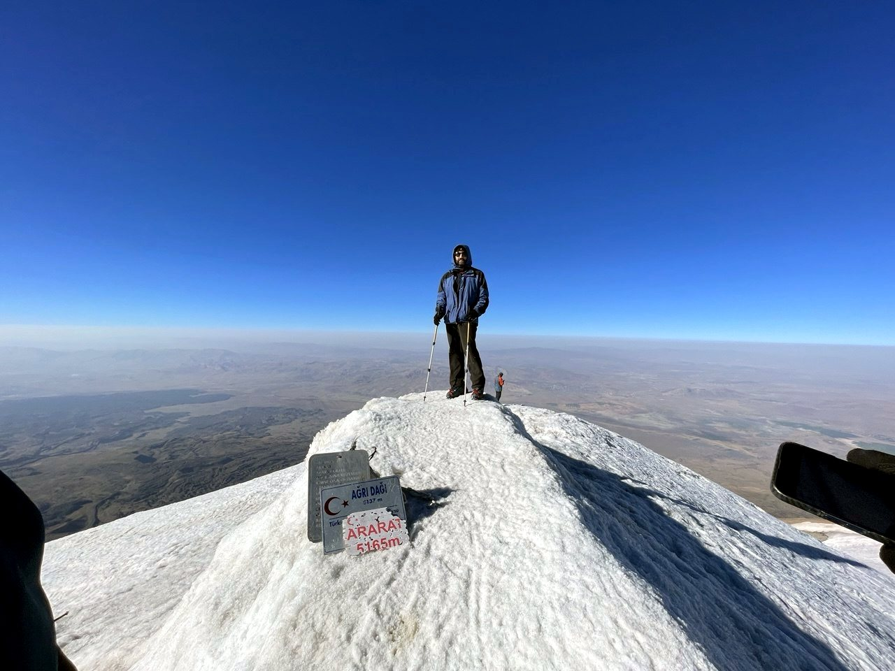
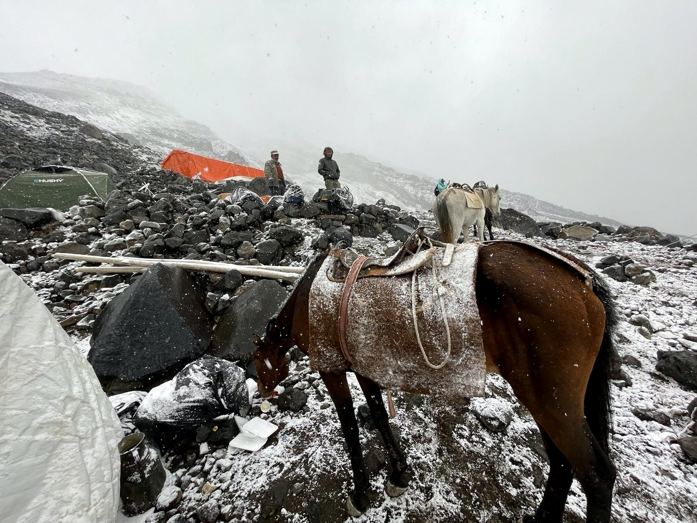

01
Ереван — ДогубаязитYerevan — DoğubayazıtԵրևան — Դողուբայազիդ
Наш минивэн везёт через Гюмри и Грузию до турецкой границы, там пересаживаемся на турецкий. По желанию — остановка в Ани. Ужин в гостинице и брифинг.Our minivan drives via Gyumri and Georgia to the Turkish border, where we switch to a Turkish one. Optional stop at Ani. Dinner at the hotel and a briefing.Մեր միկրոավտոբուսը Գյումրիով և Վրաստանով հասցնում է թուրքական սահման, այնտեղ նստում ենք թուրքականը։ Ցանկության դեպքում՝ կանգառ Անիում։ Ընթրիք հյուրանոցում և ճեպազրույց։
ГостиницаHotelՀյուրանոց

02
Лагерь 1 · 3 200 мCamp 1 · 3,200 mՃամբար 1 · 3 200 մ
Час до села Эли (2 200 м), дальше пешком. Вещи везут лошади.An hour's drive to Eli village (2,200 m), then on foot. Horses carry the bags.Մեկ ժամ մինչև Էլի գյուղ (2 200 մ), հետո՝ ոտքով։ Իրերը տանում են ձիերը։
6–7 км6–7 km6–7 կմ4–5 ч4–5 h4–5 ժ↑ ≈ 1 000 м↑ ≈ 1,000 m↑ ≈ 1 000 մ

03
Штурмовой лагерь · 4 200 мHigh camp · 4,200 mԳրոհային ճամբար · 4 200 մ
Переход и акклиматизационный выход ещё на 200–300 м. Проверка снаряжения, учимся ходить в кошках, рано спать.The move up and an acclimatisation walk another 200–300 m higher. Gear check, crampon practice, early night.Անցում և կլիմայավարժման ելք ևս 200–300 մ։ Հանդերձանքի ստուգում, սովորում ենք քայլել կատվաճանկերով, վաղ քուն։
5–6 км5–6 km5–6 կմдо 6 чup to 6 hմինչև 6 ժ↑ ≈ 950 м↑ ≈ 950 m↑ ≈ 950 մ

04
Вершина · 5 137 мSummit · 5,137 mԳագաթ · 5 137 մ
Подъём около полуночи. 5–6 часов по осыпи и камням, потом ледник в кошках. 30–40 минут на вершине, спуск в лагерь 1.Up around midnight. 5–6 hours over scree and boulders, then the glacier in crampons. 30–40 minutes on top, then down to Camp 1.Զարթնում ենք կեսգիշերին մոտ։ 5–6 ժամ քարաթափով և քարերով, հետո՝ սառցադաշտ կատվաճանկերով։ 30–40 րոպե գագաթին, վայրէջք 1-ին ճամբար։
ШтурмSummit dayԳրոհ

05
Спуск в ДогубаязитDown to DoğubayazıtՎայրէջք Դողուբայազիդ
6 км вниз до Эли и в город. По желанию — дворец Исхак-паши.6 km down to Eli and into town. Optional visit to the Ishak Pasha Palace.6 կմ ներքև մինչև Էլի և քաղաք։ Ցանկության դեպքում՝ Իսհակ փաշայի պալատ։
6 км6 km6 կմ↓ ≈ 1 150 м↓ ≈ 1,150 m↓ ≈ 1 150 մ
06
Обратно в ЕреванBack to YerevanՎերադարձ Երևան
Через Игдыр, по желанию Карс, Грузию и армянскую границу.Via Iğdır, optionally Kars, Georgia and the Armenian border.Իգդիրով, ցանկության դեպքում՝ Կարսով, Վրաստանով և հայկական սահմանով։